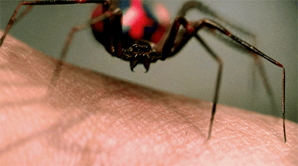
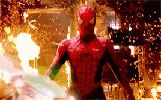
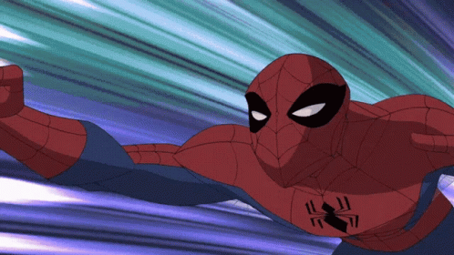
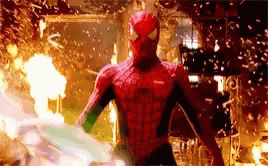
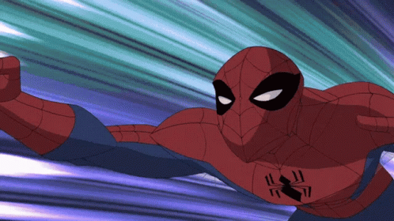
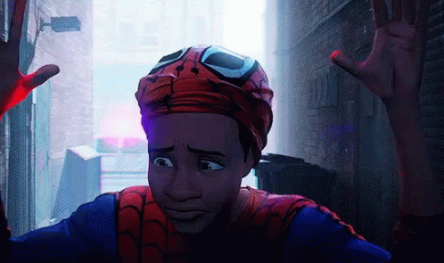
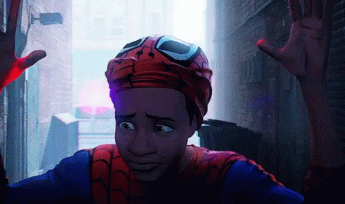

Powers of Spider-Man

A radioactive spider bite triggered mutations in Peter Parker's body. Little by little, he realized that the bite had given him abilities he didn't have before.
His powers are:
- Brilliant Intellect
The character was originally conceived by Stan Lee and Steve Ditko as intellectually gifted, but later writers have described his intellect as genius-level. Academically brilliant, Parker has expertise in the fields of applied science, chemistry, physics, biology, engineering, mathematics, and mechanics. Using his talents, he sews his own costume to conceal his identity, and builds many devices to complement his powers, most notably mechanical shooters.


- Superhuman strength, agility, speed and endurance
After having his DNA combined with that of a spider, the hero develops super strength, which is intensified with his movements, jumps and displacements in moments of emergency. With this power, the hero can lift and throw cars and ultra-heavy objects. In addition, his strength helps to strengthen his muscles, thus allowing complex movements without muscle fatigue. His speed, intelligence and strength together are a complete package so that the superhero can face the greatest dangers on Earth.
 



- Web generation through devices (or organic)
Organic web production didn't come with everything else (except in the case of some in the multiverse), but with his super-gifted intelligence, Peter combined the fact that he had arachnid powers with a bit of technology and created the super-web, which allows him to swing between buildings, move around dexterously and fly over the city. His genius in building the equipment was such that the Web-Head was able to use it to weave the threads in such a way that they formed protective shields.

- Spider-sense (superhuman reflexes and senses)
The Spider-Sense allows the superhero to know when he is going to receive a surprise attack, knowing how to react to end the threat. Peter is able to dodge shots, weapons and stay in superhuman positions, which allows him to face a large number of individuals, without them even touching him. The Spider-Sense also allows him to move in the dark and know where the enemy will be.
- Physical grip (Ability to climb and walk on walls)
One of the abilities that many small animals have is the ability to climb walls. In the case of spiders, this is possible thanks to the presence of hairs on their legs, called setae, which work like an adhesive (which never loses its stickiness). The force that the setae exert depends on the number of setae in contact with the surface, that is, the contact area. Because it is light, an ant uses about 0.1% of its body area to be able to attach itself to the wall.


- Poison Explosions
Miles is able to generate and manipulate a form of bioelectricity that his body produces, and can utilize the energy for multiple purposes. Miles has learned to discharge the energy from his hands in controlled bursts of what he calls "Venom Blasts". These energy projections vary in power and can affect the nervous system in humans and destroy technology.
- Spider Camouflage
Miles, including his clothing, can blend into his surroundings, allowing him to sneak up on his enemies or, in some cases, run away from them. The resulting effect closely resembles that of invisibility.

 
